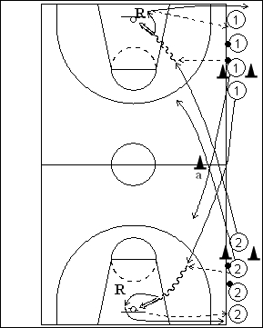

Catégorie : ECHAUFFEMENT (Ech-008)
Déroulement
- Deux files de joueurs à hauteur des lignes de lancers-francs. Tous les joueurs possèdent un ballon, sauf le premier et dernier de chaque file.
- Le premier joueur de la file 1 et le premier de la file 2 partent en même temps. Ils se croisent à hauteur de la ligne médiane en passant entre le cône a et la ligne latérale. Le premier joueur de la file 1 reçoit le ballon du deuxième de la file 2 et effectue le lay-up. Idem pour le premier joueur de la file 2 qui reçoit le ballon du deuxième joueur de la file 1 pour son lay-up. Dès qu’ils ont fait leur passe, les deuxièmes joueurs des files partent à leur tour vers le panneau opposé.
- Après son lay-up, 1 fait le rebond, passe au dernier joueur de la file 2 et va derrière cette file. De même, après son lay-up, 2 fait le rebond, passe au dernier joueur de la file 1 et va derrière cette file.
Coaching points
- Pour que le rythme général soit soutenu, il importe que les deux premiers joueurs démarrent en même temps.
- On peut demander un lay-up sur un panneau et un jump shoot sur l’autre.
- S’il y a trop de joueurs, on peut effectuer la même chose le long de l’autre ligne latérale.